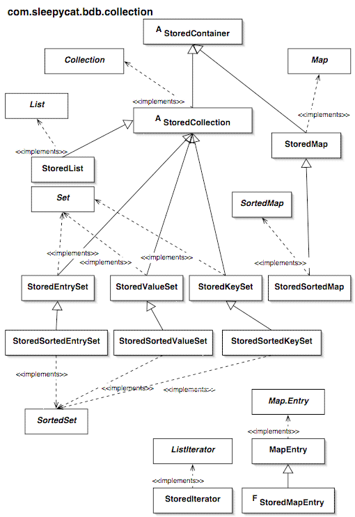

- Berkeley DB Reference Guide:
- Java API
|
  
|
Using Stored Collections

The implementation of stored collections and related
transactional access methods.
When a stored collection is created it is based on either a
DataStore
or a
DataIndex
. When a data store is used,
the primary key of the data store is used as the collection key. When a
data index is used, the index key is used as the collection key. Indexed
collections can be used for reading elements and removing elements but not
for adding or updating elements.
Stored Collection and Access Methods
The access method of the data store or index restricts the use of
the stored collection in certain respects. Most of these restrictions have to
do with
List
interfaces; for
Map
interfaces, most all access modes are fully
supported since the Berkeley DB model is map-like.
Differences between Stored Collections and Standard Java
Collections
Stored collections have the following differences with the standard
Java collection interfaces. Some of these are interface contract
violations.
The Java collections interface does not support duplicate keys
(multi-maps or multi-sets). When the access method allows duplicate keys,
the collection interfaces are defined as follows.
-
Map.entrySet()
may contain multiple
Map.Entry
objects with the same key.
-
Map.keySet()
always contains unique keys, it
does not contain duplicates.
-
Map.values()
contains all values including
the values associated with duplicate keys.
-
Map.put()
appends a duplicate if the key
already exists rather than replacing the existing value, and always
returns null.
-
Map.remove()
removes all duplicates for
the specified key.
-
Map.get()
returns the first duplicate for
the specified key.
-
StoredMap.duplicates(Object)
is an additional method for returning the values for a given key as a
Collection
.
Other differences are:
- All iterators for stored collections must be explicitly closed with
StoredIterator.close()
.
The static method
StoredIterator.close(java.util.Iterator)
allows calling close for all iterators without harm to iterators that are
not from stored collections, and also avoids casting. If a stored iterator
is not closed, unpredictable behavior including process death may result.
- Collection.size() and Map.size() always throws
UnsupportedOperationException
. This is because
the number of records in a database cannot be determined reliably or
cheaply.
- Because the size() method cannot be used, the bulk operation methods of
standard Java collections cannot be passed stored collections as
parameters, since the implementations rely on size(). However, the bulk
operation methods of stored collections can be passed standard Java
collections as parameters.
storedCollection.addAll(standardCollection); is allowed while
standardCollection.addAll(storedCollection); is not
allowed.
This restriction applies to the standard collection constructors that
take a Collection parameter (copy constructors), the Map.putAll()
method, and the following Collection methods: addAll(), containsAll(),
removeAll() and retainAll().
- The ListIterator.nextIndex() method returns Integer.MAX_VALUE for stored
lists when positioned at the end of the list, rather than returning the list
size as specified by the ListIterator interface. Again, this is because the
database size is not available.
-
Comparator
objects cannot be used and the
SortedMap.comparator()
and
SortedSet.comparator()
methods always
return null. Comparators are not supported in Java API because of the impact
on performance -- with a stored collection, keys and values would have to
be converted from byte arrays to objects each time two data items are
compared.
- The natural ordering of a stored collection is data byte order, whether the
data classes implement the
Comparable
interface or
not. The
Comparable
interface is not supported for
the same reason that the
Comparator
interface is
not supported.
- The
Object.equals()
method is not used to
determine whether a key or value is contained in a collection, to locate
a value by key, etc. Instead the byte array representation of the keys
and values are used. However, the equals() method is called
for each key and value when comparing two collections for equality. It
is the responsibility of the application to make sure that the equals()
method returns true if and only if the byte array representations of the
two objects are equal. Normally this occurs naturally since the byte array
representation is derived from the object's fields.
Other Stored Collection Characteristics
The following characteristics of stored collections are extensions
of the definitions in the
java.util
package. These
differences do not violate the Java collections interface contract.
- All stored collections are thread safe (can be used by multiple threads
concurrently) except for iterators, whenever the Berkeley DB Concurrent Data
Store or Transactional Data Store environment is used. Locking is handled
by the Berkeley DB environment. To access a collection from multiple threads,
creation of synchronized collections using the
Collections
class is not necessary except when
using the Data Store environment. Iterators, however, should always be
used only by a single thread.
- All stored collections may be read-only if desired by passing false for the
writeAllowed parameter of their constructor. Creation of immutable collections
using the
Collections
class is not necessary.
- A stored collection is partially read-only if an index is used.
Specifically, values may not be added or updated. The following methods will
throw
UnsupportedOperationException
when an index
is used:
Map.put()
,
Collection.add()
,
List.set()
,
ListIterator.set()
and
Map.Entry.setValue()
. However, removing values
via an index is allowed.
-
SortedMap.entrySet()
and
SortedMap.keySet()
return a
SortedSet
, not just a
Set
as specified in Java collections interface.
This allows using the
SortedSet
methods on the
returned collection.
-
SortedMap.values()
returns a
SortedSet
, not just a
Collection
, whenever the keys of the map can be
derived from the values using an entity binding. Note that the sorted set
returned is not really a set if duplicates are allowed, since it is
technically a collection; however, the
SortedSet
methods (for example, subSet()), can still be used.
- For
SortedSet
and
SortedMap
views, additional subSet() and subMap()
methods are provided that allow control over whether keys are treated as
inclusive or exclusive values in the key range.
- Keys and values are stored by value, not by reference. This is because
objects that are added to collections are converted to byte arrays (by
bindings) and stored in the database. When they are retrieved from the
collection they are read from the database and converted from byte arrays to
objects. Therefore, the object reference added to a collection will not be
the same as the reference later retrieved from the collection.
- A runtime exception,
RuntimeExceptionWrapper
, is thrown
whenever database exceptions occur which are not runtime exceptions. The
RuntimeExceptionWrapper.getCause()
method can be called to get the underlying exception.
- All iterators for stored collections implement the
ListIterator
interface as well as the
Iterator
interface. This is to allow use of the
ListIterator.hasPrevious()
and
ListIterator.previous()
methods, which work
for all collections since Berkeley DB provides bidirectional cursors.
- All stored collections have a
StoredCollection.iterator(boolean)
method that allows creating a read-only iterator for a writable collection.
For the standard
Collection.iterator()
method,
the iterator is read-only only when the collection is read-only. Read-only
iterators are important for using the Berkeley DB Concurrent Data Store
environment, since only one write cursors may be open at one time.
- Iterator stability for stored collections is greater than the iterator
stability defined by the Java collections interfaces. Stored iterator
stability is the same as the cursor stability defined by Berkeley DB.
- When an entity binding is used, updating (setting) a value is not allowed
if the key in the entity is not equal to the original key. For example,
calling
Map.put()
is not allowed when the
key parameter is not equal to the key of the entity parameter.
Map.put()
,
List.set()
,
ListIterator.set()
, and
Map.Entry.setValue()
will throw
IllegalArgumentException
in this situation.
- Adding and removing items from stored lists is not allowed for sublists.
This is simply an unimplemented feature and may be changed in the future.
Currently for sublists the following methods throw
UnsupportedOperationException
:
List.add()
,
List.remove()
,
ListIterator.add()
and
ListIterator.remove()
.
- Two extension methods allow adding a new record with an automatically assigned
key:
StoredList.append(java.lang.Object)
and
StoredMap.append(java.lang.Object)
.
Record number assignment by the database itself is supported for QUEUE, RECNO
and RECNO-RENUMBER databases. An application-defined
PrimaryKeyAssigner
may also be used.
Why Java Collections for Berkeley DB?
The Java collections interface was chosen as the best Java API for
Berkeley DB given these requirements:
- provide the Java developer with an API that is as familiar and easy to use
as possible
- provide access to all, or a large majority, of the features of the
underlying Berkeley DB storage system
- compared to the Berkeley DB API, provide a higher-level API that is
oriented toward Java developers
- for ease of use, support object-to-data bindings, per-thread transactions,
and some traditional database features such as foreign keys
- provide a thin layer that can be thoroughly tested and which does not
significantly impact the reliability and performance of Berkeley DB
Admittedly there are several things about the Java Collections API
that don't quite fit with Berkeley DB or with any transactional database, and
therefore there are some new rules for applying the Java Collections API.
In addition, the Java API data store, index and foreign key APIs are outside
the scope of the Java Collections API and are therefore somewhat disjoint.
However, these disadvantages are considered to be smaller than the
disadvantages of the alternatives:
- A new API not based on the Java Collections API could have been designed
that maps well to Berkeley DB but is higher-level. However, this would require
designing an entirely new model. The exceptions for using the Java Collections
API are considered easier to learn than a whole new model. A new model would
also require a long design stabilization period before being as complete and
understandable as either the Java Collections API or the Berkeley DB API.
- The ODMG API or another object persistence API could have been implemented
on top of Berkeley DB. However, an object persistence implementation would add
much code and require a long stabilization period. And while it may work well
for applications that require object persistence, it would probably never
perform well enough for many other applications.
In fact both of these alternatives were started and then abandoned
for the reasons given.
Copyright (c) 1996-2003 Sleepycat Software, Inc. - All rights reserved.